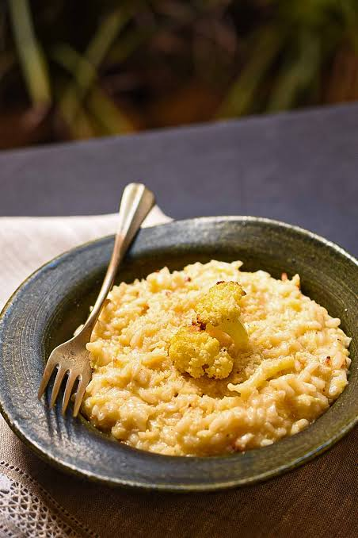
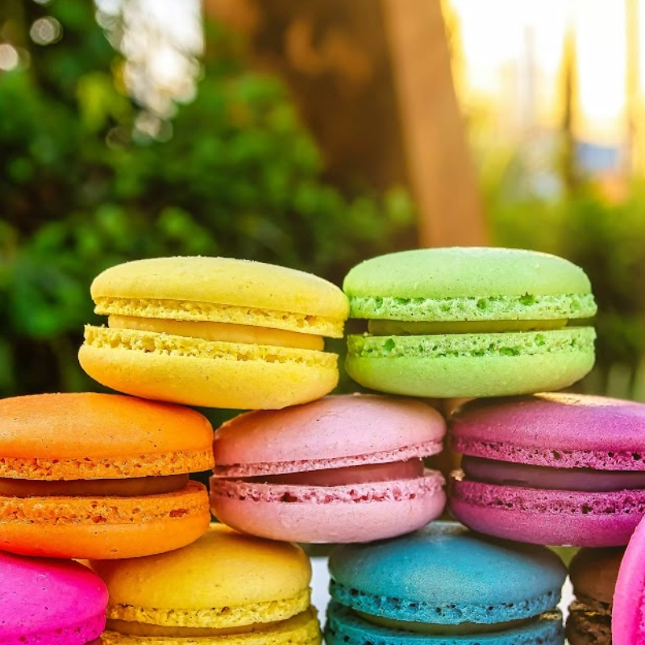
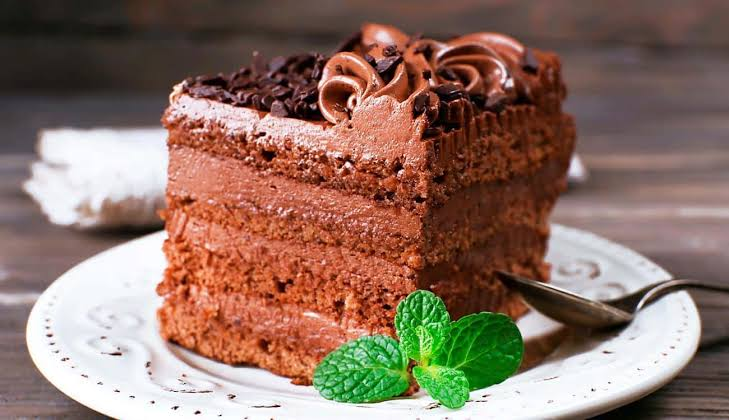
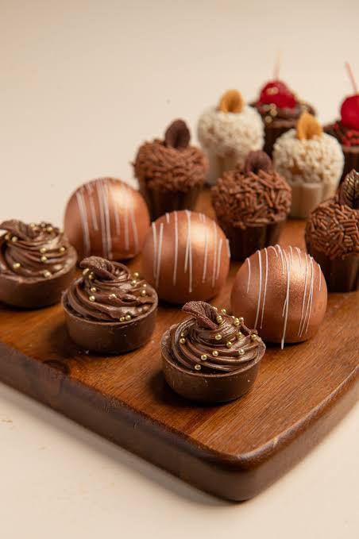
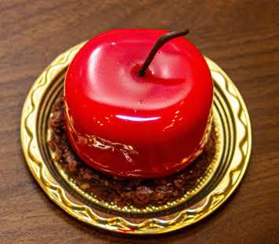
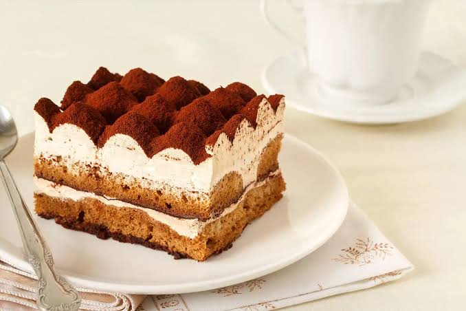

Massas Italianas

Melhores comidas do mundo
/i.s3.glbimg.com/v1/AUTH_1f540e0b94d8437dbbc39d567a1dee68/internal_photos/bs/2022/n/3/KTF04hTw6pBJm8SJ7sYA/meat-strogonoff-with-rice-and-straw-potato.jpg "Strogonoff")
Comidas rapidas e práticas

Cheirinho de casa de vó

Japinha


Doces da europa

O classico que funciona

Nunca dá pra comer mais de um

Obrigatório ter em festas juninas

Gostos curiosos
